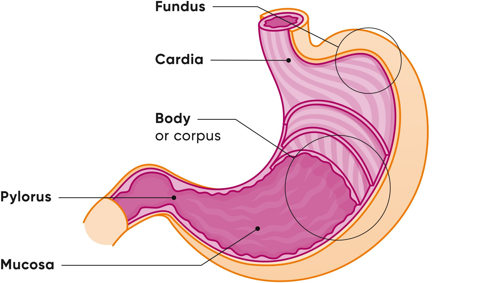

The stomach 🍲 is a muscular organ 💪 located in the
upper abdomen 📍. It plays a major role in digestion 🍽️
by breaking down the food 🍕 we eat into a semi-liquid form
called chyme 🥣.
It uses strong acids 🔥, mainly gastric acid, and special
enzymes 🧪 to break down proteins 🥩 and kill harmful
bacteria 🦠 that may enter with food.
The stomach walls contain powerful muscles 💪 that contract
and mix food 🔄, helping it blend with digestive juices 🧃
for better processing.
It also has protective mucus 🛡️ lining its walls to prevent
the strong acid 🔥 from damaging the stomach itself.
After digestion begins, the stomach slowly releases food ⏳
into the small intestine 🧵 through a valve 🚪 called the
pyloric sphincter, ensuring controlled digestion ⚖️.
In addition, the stomach sends signals ⚡ to the brain 🧠
to indicate hunger 😋 or fullness 🍽️, helping
regulate eating habits.
All of these processes happen automatically 🤖, showing how
the digestive system 🍽️ works efficiently to provide
the body with nutrients 🧬 and energy ⚡.
